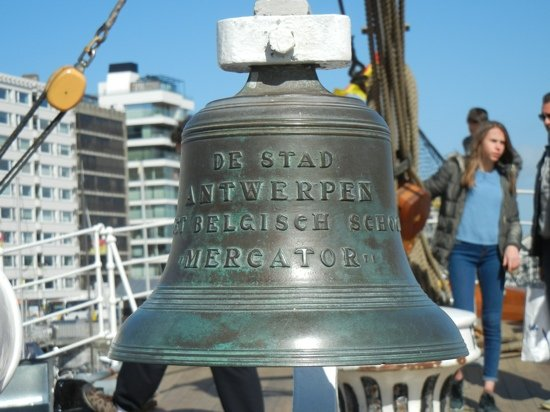
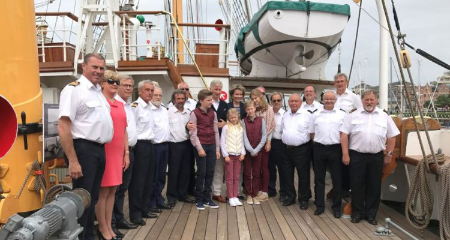

Het zeilschip De Mercator kan bewonderd worden in Oostende. Het ligt vlakbij het treinstation. Deze barkentijn nam vroeger met veel succes deel aan zeilraces, en werd later gebruikt als een opleidingsschip. Het is bijna 80 meter lang en heeft een bruto tonnenmaat van bijna 800 ton.
Het zeilschip Mercator ligt in zijn volle glorie in het mercatordok.
Het dek van de Mercator is steeds proper geboend.

De scheepsklok straalt autoriteit en authenticiteit uit.
